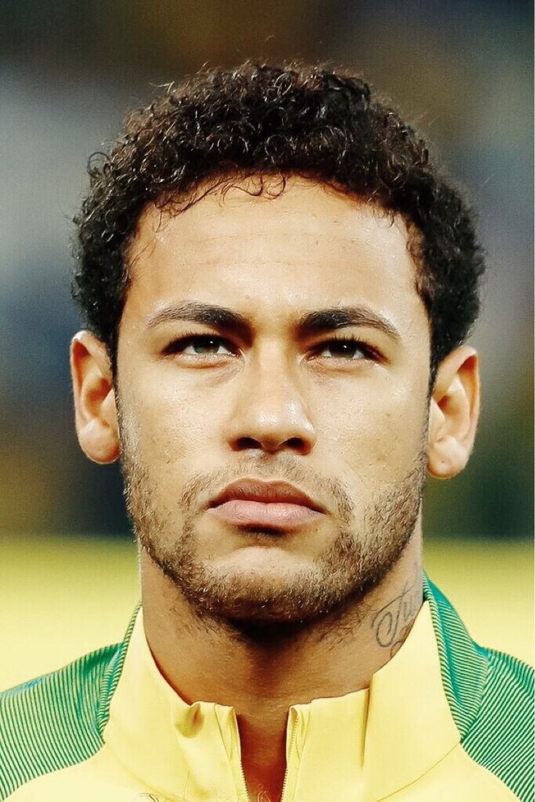

Curriculo Neymar Junior
Dados pessoais:
- Nome completo: Neymar da Silva Santos Junior
- Data de nascimento: 05/02/1992
- Líguas Faladas: Português, Ingles, Espanhol, Catalão e Francês
- Apelidos: Menino Ney, NeyMito, Adulto Ney
|
 |
Experienciencia Profissional:
- Passagem por clubes como Santos, Barcelona, PSG e Al Hilal
- Maior artilheiro da seleção brasileira
- Maior assistente da história por seleções
- Duas finais de champions league (2015 e 2020)
- Campeão da libertadores (2011) e da Champions league (2015)
- Campeão da Copa das Confederações(2013)
- Campeão Olímpico (2016)
|
Formação:
- Base Santos FC (2002)
- Base Real Madrid (2004)
- Santos FC (2009)
- Seleção Sub-17 (2009)
- Seleção Sub-20 (2011)
- Seleção Sub-23 (2016)
- Barcelona FC (2013)
- Paris Saint-German (2017)
- Al-HIlal (2023)
|
Titulos Individuais:
- 2x Rei da América
- 1x Craque do Brasileirão
- 1x Artilheiro da libertadores
- 1x Artilheiro da Champions League
- 1x Melhor jogador da França
- 1x Melhor jogador da Copa das Confederações
- 1x Prêmio Puskas (2011)
- 2x Terceiro melhor jogador do mundo (2015, 2017)
|
Contatos:
|
Objetivos Pessoais e qualidades:
- Meu maior objetivo hoje é ser o melhor jogador do mundo e conquista a copa do mundo com minha seleção.
- Tenho muita força de vontade e não desisto nunca.
- Ousado e alegre.
- Pai de família e fiel à minha esposa
|